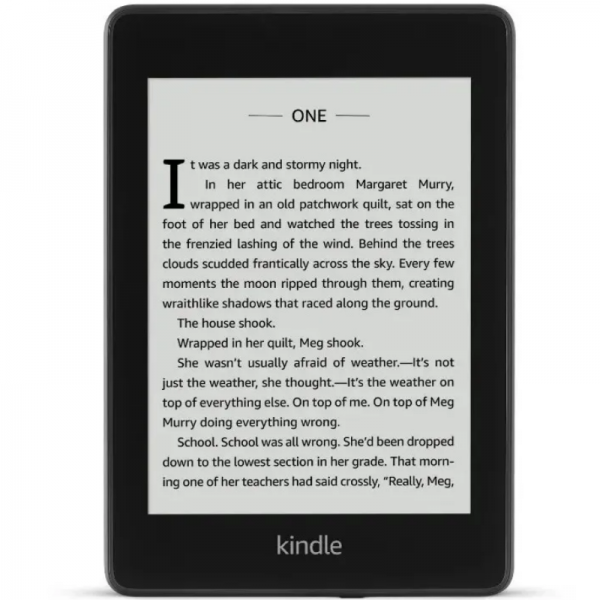

Debatamos sobre final de Divergente (Libro 3)
Este es el libro del que hicimos lectura grupal la semana pasada,
el cúal terminamos. Pero muchxs estuvieron decepcionadxs del final.
La mayoría me escribió diciendo "Tris no debía tener ese final" "Lloré
muchisimo al terminar el libro", entre otros.
Muy poquitos les ha parecido un buen libro. Yo entro en esa categoría
aunque no lo crean.
Yo creo que no siempre los libros deben tener finales felices o protagonistas
vivos, el hecho de que haya muerto para salvarlos a todos podría consideralo
bastante original. Generalmente el protagonista sobrevive, y ver algo diferente
me parece mejor.
¿Y vos? ¿Qué opinas de ese libro? Den sus argumentos :)
De Wattpad al cine
Los rumores sobre que los libros de Wattpad podrían llevar al cine
son ciertos. Películas como "Mi primer Beso" o "After" tienen sus inicios en
esta plataforma de libros. Esto motivó a muchisimos escritores a seguir escribiendo
para algún día llegar a las grandes pantallas.
Sin embargo, los fanáticos de la literatura clásica (o mejor dicho, los lectores tóxicos)
están en contra de esta idea, no solo por odio a libros que generalmente son creados por
personas que no estudiaron sobre literatura, sino porque dicen que es injusto para las
"libros de verdad".
Por eso, se ha armado una gran pelea entre lectores de Wattpad y lectores de literatura
clásica, aunque también se encuentran los neutrales, que apoyan ambos bandos. Desde mi
punto de vista, todos podemos escribir y llegar a la televisión por más que no seamos
artistas conocidos. Lo importante es el talento.
¿Vos de que bando estás? ¿Qué opinas sobre esta pelea?
¿Libros virtuales o físicos?
La tecnología ha avanzado en cada aspecto de nuestras vidas, y también en las
de los lectores
Los ebooks se han vuelto muy populares en este último tiempo, especialmente entre los más
jóvenes. Si no conoce lo que es un ebook, le dejamos una imagen.

Empecemos con las ventajas y desventajas de los libros físicos. Son más fáciles de marcar para asi
no perder la página, permite leer en espacios públicos sin reflejos de pantalla... Al ser un
elemento físico, le damos un valor especial. ¡Ni hablar del olor! No hay nada más lindo que el
olor de un libro nuevo. Pero tiene varias desventajas... como el gran espacio que ocupan, el deteriodo
con el paso del tiempo y que son incomodos para trasladar.
Las ventajas de los libros digitales es el poco espacio que ocupan al almacenar varios libros, son fáciles
de usar, son portátiles, se adquieren fácilmente al internet(esto puede permitir buscar palabras que no
entiendas de forma más fácil), tiene más facilidad para buscar libros, podés cambiar la tipografía y su
tamaño y son más baratos. Las desventajas que podemos encontrar es la piratería de libros. Al ser virtual,
no son libros que se puedan compartir. Se necesita si o si un dispositivo y conexión a internet para comprar
libros electrónicos, el lector se puede estropear, posee batería, no tiene olor a libro nuevo (esto le quita
muchisisisimos puntos), no todos los libros están digitalizados y por último, si lo perdés, el costo es más
alto que el de un libro físico.
¿Vos qué preferis, un libro físico o un ebook?